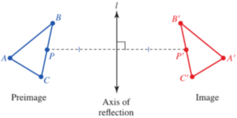
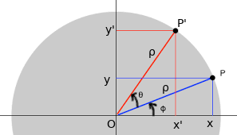

Transformation Groups
A bijection X → X is often called a transformation on the set X, so a transformation group on X is a set of bijections on X which form a group under composition. Let X an arbitrary set. Consider the set 𝓢(X) of all transformations or bijections from X to itself: X → X. Under the operation of composition of functions (f ∘ g) (x) = f(g(x)), 𝓢(X) is a group since composition is associative, composition of bijections is a bijections, 1X is a bijections, and every bijection has an inverse. I can be easily seen that 𝓢(X, ∘) is a non-Abelian group.
7.3.1 Definition A group G is said transformation group of a set X if G is a subgroup of the group 𝓢(X, ∘) of all bijections from X to itslef.
An example of transformation group is the group of planar isometries; Isometries are transformations that preserve distance. An isometry of ℝ2 is a transformation φ: ℝ2 → ℝ2 that preserves distance, so that the distance between points P and Q is the same as the distance between the points φ(P) and φ(Q) for all points P and Q in ℝ2. Note that if φ: ℝ2 → ℝ2 is a rigid motion, then φ sends the vertices of a triangle to the corresponding vertices of a congruent triangle. Hence, φ preserves the angles of a triangle.
If ψ is also an isometry of ℝ2, then the distance between ψ(φ(P)) and ψ(φ(Q)) must be the same as the distance between φ(P) and φ(Q), which in turn is the distance between P and Q, showing that the composition of two isometries is again an isometry. Since the identity map is an isometry and the inverse of an isometry is an isometry, we see that the isometries of ℝ2 form a subgroup of the group of all transformations of ℝ2.
The isometries of the plane form a group under composition of function, the so called Euclidean group E2. Euclidean group is built from the translational group T and the orthogonal group O2(R).
Rotations and Reflections
Every element of O2(R) can be represented by a 2 x 2 matrix, where any such matrix satisfies the condition ATA = I. Let A be the matrix with respect to the standard basis for an element in O2(R). If
then the condition ATA = I gives
The relation above is satisfied for an angle θ with a = cos θ, c = cos θ, (b d) = (−sin θ, cos θ), or (b,d) = (sin θ, −cos θ). The first choiche gives a matrix A with determinant 1 that represents a rotation
which are elements of the subgroup SO2(R) of O2. In particular, we have RθRφ = RφRθ, so the group SO2 is Abelian.
On the other hand the second choice gives a matrix of determinant −1
that represents a reflection across a line through the origin. The elements of O2(R) \ SO2(R) are reflections.
We can think of a reflection or a flip across a line l moves each point P to P ' such that line l is the perpendicular bisector of the segment connecting P and P′. If P is on l, then P is mapped to itself, or P = P'.
Reflections take the form
x' = x cos θ + y sin θ.
y' = − x sin θ − y cos θ.
By applying two times such a transformation, the identity is obtained.
Rotations: Consider the following situation in which a point P of coordinates (x, y) is rotated about the origin of an angle θ to the point P' of coordinates (x', y').
From the trigonometric relations
x = ρ cos φ, y = ρ sin φ
and
x' = ρ cos (θ + φ) , y = ρ sin (θ + φ)
where ρ indicates the lenght of both OP and OP'. Since
ρ cos (θ + φ) = ρ cos θ ρ sin φ − ρ sin θ cos φ = x cos θ − y sin θ
ρ sin (θ + φ) = ρ sin θ ρ cos φ + ρ cos θ sin φ = x sin θ + y cos θ
we have
x' = x cos θ − y sin θ
y' = x sin θ + y sin θ
Introducing the column vector (x y) and (x' y') we can write the transformation as
To reverse it, we apply the rotation −θ and obtain A−1
Translations
Let T denote the subgroup of E2 which consists of all the translations. Translations slide every point the same distance in the same direction. Example: T(x, y) = (x, y) + (a, b) = (x + a, y + b), with a,b ∈ℝ2 or equivantely
x' = x + a
y' = y + b
In vector form a translations by the vector v is the function τ: ℝ ⟶ ℝ2 defined by τ(x) = v + x for all x ∈ ℝ2. Translations— other than the trivial one, when v = 0 — cannot be linear because.
τ(x + y) = x + y + v ≠ τ(x) + τ(y) = x + y + 2v
Or, even more simply, we note that τ(0) = v, which must be 0 if τ is to be linear.
Since τ(0) = v, a translation is completely determined if we know where it sends the origin. This is easily checked τ(x) = 0 + x is the identity element. If τ1, τ2 ∈ T are defined by τ1(x) = u + x and τ2(x) = v + x for all x ∈ ℝ2, then
τ1τ2−1(x) = τ1((−v) + x)
= u + ((−v) + x)
=(u − v) + x
So τ1τ2−1 is translation by u − v and therefore blongs to T.
All these transformations can be represented by the following equations
x' = x cos θ + y sin θ + α.
y' = ε x sin θ −ε y cos θ + β.
with ε = ± 1. The matrix A = [cos θ, sin θ; ε x sin θ], is orthogonal with determinant ±1.
It can be proved that the group of planar isometries is generated by translations, rotations and reflections. More precisely, reflections are sufficient to generate the entire group of planar isometries (every isometry can be expressed as product of at last three reflections).
Other planar isometries are
The group of Affine transformations constitute the class of linear transformations (i.e. , linepreserving) that maps parallel lines into parallel lines. They can be represented though the following equations
x' = ax + by + α
y' = cx + dy + β
with αβa,b,c,d ∈ ℝ.
The group of a graph
7.3.2 Definition A graph Γ = (V,L) is a non-empty set of vertices V and a set of sides L of non ordered pairs.
In 1872, Felix Klein, an eminent German mathematician, in his famous Erlanger Programm attempted to define geometry as the study of those properties which are invariant under a given group of transformation: different geometries corresponding in this way to different transformation groups. Geometries may be classified according to the group of transformations which preserve the intrinsic properties of the geometry. In the case of Euclidean geometry, this is the group of Euclidean isometries: in line with the above, these will be seen to be the rotations, reflections and translations of the plane.